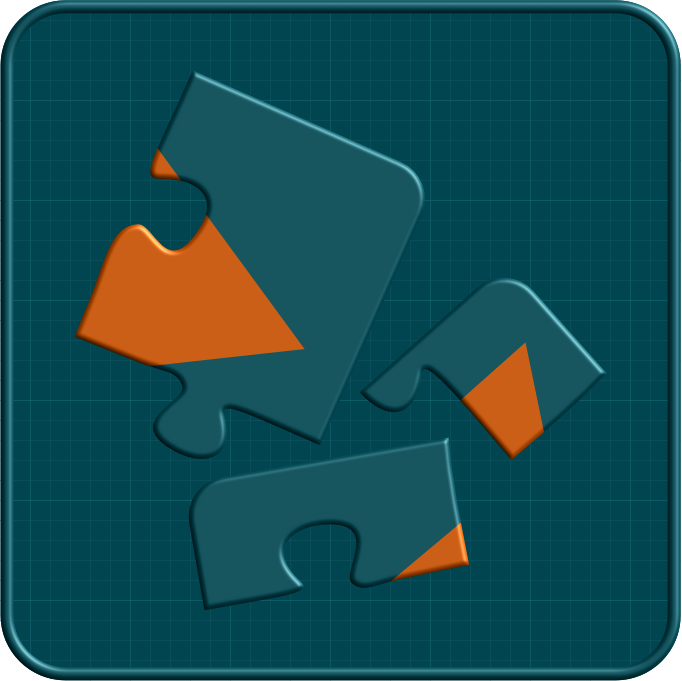

Das Debakel folgt stets demselben Muster
1–Begeisterung im Management
3–Überforderung im Projektteam
3–Wenig effektive Lösung
3–Aufwand- und Kostenexplosion
4–Eskalation
5–Händeringen beim Anbieter
6–Aktivismus
8–Projektstopp oder -abbruch

Die meisten Digitalisierungen kommen früher oder später
in grosse Schwierigkeiten.

1–Begeisterung im Management
3–Überforderung im Projektteam
3–Wenig effektive Lösung
3–Aufwand- und Kostenexplosion
4–Eskalation
5–Händeringen beim Anbieter
6–Aktivismus
8–Projektstopp oder -abbruch
Viel implizites* Fachwissen
Oberflächliches Prozessverständnis
Unterschätzte Komplexität
Abweichende Vorstellungen
und Ziele
Methodische Schwächen
Fehlende digitale Tools
* undokumentiert, nur wenigen bekannt
Alle Mängel sind eng miteinander verknüpft. Zum Beispiel implizites Wissen, oberflächliches Verständnis und unterschätzte Komplexität:
1 • Fachexperten schätzen die Komplexität ihrer Prozesslösung so ein:

Abb. 1 — Links, sinnbildlich die Komplexität der aktuellen, nicht digitalisierten Lösung.
Rechts, die der digitalen Zukunft. Die Fachexperten sind sich meist nicht bewusst, dass ihre alltägliche Tätigkeit ausserordentlich komplex ist. Sie stellen sich dehalb vor, dass die digitalisierte Lösung vergleichsweise einfach wird. (Hint: sie ist es nicht!)
2 • Der Software-Partner kennt die aktuelle Lösung kaum und
schätzt die Komplexitäten so ein:

Abb. 2 — Die Technolgieexperten verschaffen sich meist kein detailliertes und präzises Bild der nicht digitalisierten Prozesse. Und sie müssen sich die Komplexität der neuen Lösung aufgrund von puzzle-artigen Anforderungen konstruieren, die sie von den Fachexperten erhalten.
3 • Die tatsächliche Komplexität der kleinsten, wirksamen Lösung ist später so:

Abb. 3 — Die allseits unerwartet grosse Komplexität der Fachprozesse erfordert eine entsprechende Komplexität und neue Fähigkeiten der digitalisierten Lösung.
(Bilder erstellt mithilfe von Google Gemini, ©2026)
Kein Wunder also sind alle Aufwand- und Kostenschätzungen
um den Faktor 3 bis 10 zu tief!
Der Schaden ist jedoch angerichtet: das Projekt wird mit unrealistischen Erwartungen gestartet. Das Lehrgeld wird enorm sein.
Digitalisierung ist Automatisierung.
Automatisierung ist in jeder Industrie schwierig.
Es gibt zwei Grundursachen für alle aufgeführten Mängel:
Es fehlt eine standardisierte, fachorientierte Sprache zwischen Fach- & Technologieexperten.
Die Kommunikation ist geprägt von Schwierigkeiten und Missverständnissen.
Die Fach- bzw. Technologieexperten können dem Gegenüber ihre Anforderungen nicht präzise und koheränt vermitteln.
Es gibt kein (oder kein zugängliches) Gesamtbild der Fachgebiete, -regeln & -prozesse.
Die zukünftige Lösung ist ein Puzzle, von dem man nicht weiss, wie es einmal aussehen soll.
Ohne konsolidiertes Zielbild werden Zusammenhänge übersehen und falsche Annahmen getroffen, die dem Projekt schaden.
Die Bauindustrie erstellt seit über 500 Jahren mit grossem Erfolg massstabtreue Pläne,
die eine visuelle Standardsprache verwenden und
ein Modell der Soll-Lösung darstellen.
Ausgebildete Architekten erarbeiten mit ihren Kunden Konzepte und Pläne.
Die Pläne werden erst umgesetzt, wenn alle Stakeholders einverstanden sind.
Viele Industrien gehen so vor und setzen clevere digitale Tools ein.
Lernen wir von ihnen!
Was wir gelernt haben, erfährst Du in der Einführung in unser Projektvorgehen.


 ersetzt Trial & Error
ersetzt Trial & Error
durch Klarheit & Methode
Damit befähigen wir Deine Organisation als
Leaderin ihrer eigenen Digitalen Transformation,
denn Digitalisierung ist kein Projekt, sondern
eine Fähigkeit, die nicht delegiert werden kann.
Wir konzipieren, planen, führen
und unterstützen die
Evolution Eurer Prozesse oder
Eure Digitale Transformation
von der
Strategie bis zur Spezifikation.
——
Die Konzeption und Realisierung der Software überlassen wir den Partnern Eurer Wahl.
Dadurch können wir unabhängig Eure Interessen vertreten und durchsetzen.
Wir stellen Eure organisatorischen Prozesse ins Zentrum.
——
Zuerst bauen wir gemeinsam mit Euren Fachleuten ein präzises Verständnis Eurer aktuellen Fachprozesse und Geschäftsbereiche auf.
Dann entwickeln unsere Prozessarchitekten mit Euch systematisch ein Zielbild, spezifizieren und validieren die zukünftigen Prozesse.
Erst danach planen wir eine etappierte Umsetzung mit Eurer Organisation, den Technologien und Partnern Eurer Wahl.
Unser äusserst innovativer, methodischer Ansatz, der durch unsere eigenen, modernsten Tools überhaupt erst möglich wird, setzt neue Masstäbe für Transparenz, Wissensmanagement und Integration der Stakholder.
Wir erstellen kohärente Modelle Eurer aktuellen und Eurer zukünftigen Lösung — daraus ergibt sich die Transformation.
Die Soll-Modelle bilden die verlässliche Grundlage für die Auswahl der Partner und für die Umsetzung sowohl der digitalen wie auch der organisatorischen Elemente.
Die meisten Software-Projekte in Unternehmen geraten in Schieflage, müssen neu aufgestellt oder abgebrochen werden.
Wir auditieren Projekte und machen (optional) aus einem Scherbenhaufen wieder ein erfolgreiches Projekt.
Als sehr erfahrene Projektleiter führen wir Eure Firma erfolgreich zu effektiven Prozessen und Software-Lösungen*.
* Projektleitungen übernehmen wir nur, wenn das Projekt auch nach unserem methodischen Ansatz abgewickelt wird
Haben wir Dein Interesse geweckt?
Nimm Kontakt mit uns auf!
Ein vollständiges Puzzle richtig zusammenzusetzen ist reine Fleissarbeit.
In 1000 Teilen frühzeitig das Gesamtbild zu erkennen,
dessen Bedeutung richtig zu interpretieren
und die fehlenden Teile zu beschaffen —
das ist Teil unserer Mission.